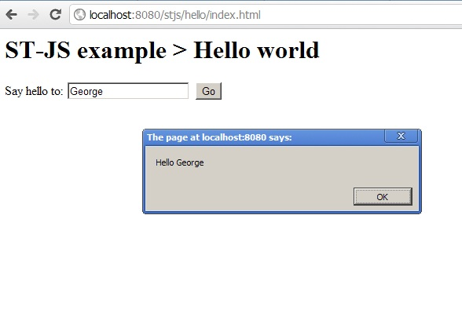

Tutorial
This tutorial explains you how to build a "Hello World" application using STJS. We presume you have previous knowledge of Maven, Java, Javascript and HTML. Additionally you'll have to deploy the generated war file to your preferred servlet engine. Even though Java is used to generate the Javascript, for this particular example, as no interaction with the server is made, no Java code is run! So you can also take the content of the war file and deploy it to an Apache server, for example, and it will work!
So here are the steps to create a new, very simple application, with STJS:
- Create a new empty POM file for a war project
<project xmlns="http://maven.apache.org/POM/4.0.0" xmlns:xsi="http://www.w3.org/2001/XMLSchema-instance" xsi:schemaLocation="http://maven.apache.org/POM/4.0.0 http://maven.apache.org/xsd/maven-4.0.0.xsd"> <modelVersion>4.0.0</modelVersion> <groupId>org.st-js</groupId> <artifactId>hello</artifactId> <version>1.0.0-SNAPSHOT</version> <packaging>war</packaging> <name>Hello world</name> </project>
- Add the stjs.version property - easier to have the same version between the different STJS artifacts
<properties> <stjs.version>1.3.0</stjs.version> </properties>
- Set the Java version to a version superior to 1.5
<build> <plugins> <plugin> <groupId>org.apache.maven.plugins</groupId> <artifactId>maven-compiler-plugin</artifactId> <configuration> <source>1.6</source> <target>1.6</target> </configuration> </plugin> </plugins> </build> - Add the dependency to the STJS Javascript (basic and DOM) bridge library
<dependency> <groupId>org.st-js</groupId> <artifactId>js-lib</artifactId> <version>${stjs.version}</version> </dependency> - Add the STJS plugin that will generate the Javascript code (inside the build/plugins section)
<plugin> <groupId>org.st-js</groupId> <artifactId>maven-plugin</artifactId> <version>${stjs.version}</version> <executions> <execution> <id>main</id> <goals> <goal>generate</goal> </goals> </execution> </executions> </plugin> - Add the index.html page (in src/main/webapp)
<html> <body> <h1>ST-JS example > Hello world</h1> <form id="form"> Say hello to: <input type="text" name="to"> <input type="button" name="say" value="Go"> </form> </body> </html>
- Create the Java class org/stjs/hello/HelloWorld.java. The main method will be executed after the declaration of the class.
public class HelloWorld { public static void main(String [] args){ } }
- Add the onload listener in the main method. The "window" object is a static member of the Global class.
window.onload = new Callback1<DOMEvent>() { public void $invoke(DOMEvent ev) { } };
- Add the click listener to the "Go" button inside the onload listener
Form form = window.document.forms.$get(0); Element button = form.elements.$get("say"); final Input text = form.elements.$get("to"); button.onclick = new Function1<DOMEvent, Boolean>() { public Boolean $invoke(DOMEvent ev) { alert("Hello " + text.value); return true; } }; - Include the generated Javascript and the STJS support file in the page
<head> <script src="../generated-js/stjs.js" type="text/javascript"></script> <script src="../generated-js/org/stjs/hello/HelloWorld.js" type="text/javascript"></script> </head>
- Add an (almost) empty WEB-INF/web.xml file in src/main/webapp to allow maven build
<?xml version="1.0" encoding="UTF-8"?> <web-app xmlns="http://java.sun.com/xml/ns/j2ee" xmlns:xsi="http://www.w3.org/2001/XMLSchema-instance" xsi:schemaLocation="http://java.sun.com/xml/ns/j2ee http://java.sun.com/xml/ns/j2ee/web-app_2_4.xsd" version="2.4"> </web-app>
- Build (* see generated Javascript below) and deploy it to your application server
- Browse the page and click on the "Go" button

You can also find this example (together with other, mode advanced examples) included in the STJS downloadable archive. Go to our download section for details.
*) The generated Javascript code:
var HelloWorld = function(){}; HelloWorld.main = function(args) { window.onload = function(ev) { var form = window.document.forms[0]; var button = form.elements["say"]; var text = form.elements["to"]; button.onclick = function(ev) { alert("Hello " + text.value); return true; }; }; }; if (!stjs.mainCallDisabled) HelloWorld.main();